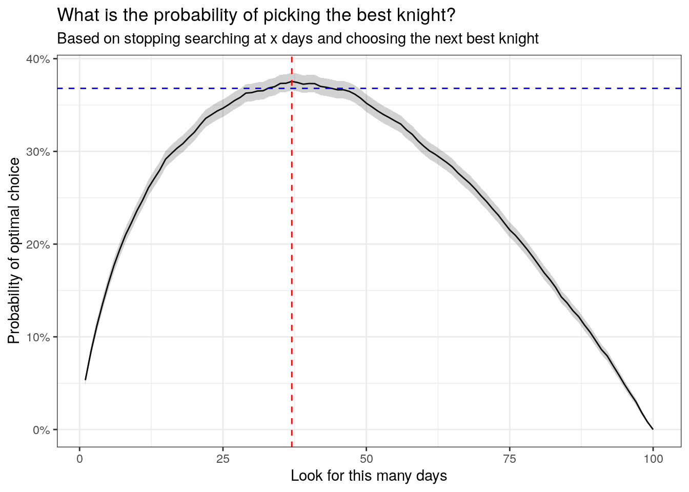

The August 2022 edition of Significance Magazine posts a challenge:
Choosing a husband: In the court of King Arthur, a damsel, Elfreda needs to choose a husband. Each day for the next 100 days Knights will come to Calemlot to be interviewed by Arthur to be Elfreda’s husband. However once the Knights left the castle they did not return. She needed to decide as soon as she saw a knight whether to marry or pass. In the challenge, Elfreda is given the advice from Merlin to not pick any of the first 37, just look and decide who is best, then pick the next knight who is better than that.
The questions are:
Why did Merlin instruct Elfreda to ignore the first 37 suitors?
What did Merlin think was the probability that Elfreda would choose the very best knight with this strategy?
This is a well known problem in Optimal Stopping theory. When you look at the first few knights you have no information about how they rank relative to all 100. But by the time you have assessed most of the 100 knights you have information but you have no agency. The knights have all moved on and you either miss out or have to settle for whoever is left.
This problem comes up every time I look for a parking spot on a busy day. Do I take the first spot I find a long way from the beach? I could try to get a closer spot but may not find one and could miss out entirely. Most likely the earlier spots are now taken.
When is the optimal time to stop looking and take the leap?
The strategy here is:
Just Look at a given number of knights without commiting to any
Note the best ranking knight of out of the ones we looked at
Commit to the very next knight that is better than the best ranked so far.
We assume we look at least one knight before stopping our search and assume that if we fail to find a superior knight after our looking period - we miss out! We obviously wont settle for less. (I guess I could force this to accept the last one in line - not a big deal).
Simulation in R
We can simulate this problem by sampling 100 random knights and assigning them a random ranking of 1-100 (assume 100 is best).
Next we can look at the cumulative maximum ranking. This will track the score of the best knight seen so far. We also run, say, 10,000 simulations of this problem to analyse.
We can write a function that can map over each day and determine what rank knight we would end up with if we stopped searching after x days and committed to the next best knight.
optimal_stop <-function(samp, i) {if (i ==0) { samp[1] }if (i >length(samp) | i <0) {stop("Invalid choice") }if (any(samp >cummax(samp)[i]) ==FALSE) {# if you want to default to the last option#samp[length(samp)]# if you would rather miss out if no superior choiceNA } else{ idx <-which.max(samp >cummax(samp)[i]) samp[idx] }}
We want to know how often we end up with the optimal (top ranked) knight depending on which day we stop looking.
We can plot the success proportion of bagging the most optimal knight for each stopping day.
ggplot(results, aes(stop_after_days, optimal_stop_pct)) +geom_line() +geom_ribbon(aes(stop_after_days, ymax = optimal_stop_pct +1.96* var, ymin = optimal_stop_pct -1.96* var), alpha =0.22) +theme_bw() +geom_vline(xintercept =37, lty =2, col ='red') +geom_hline(yintercept =0.368, lty =2, col ='blue') +scale_y_continuous(labels = scales::percent) +labs(title ="What is the probability of picking the best knight?",subtitle ="Based on stopping searching at x days and choosing the next best knight",x ="Look for this many days",y ="Probability of optimal choice")

Here is the number of knights we should observe without picking any
which.max(results$optimal_stop_pct)
[1] 37
And here is the probability of choosing the best knight with this strategy
max(results$optimal_stop_pct)
[1] 0.3755
So we should let the first 37 knights pass, just like Merlin said. If we do this, we will give ourselves roughly 37% probability of picking the most optimal knight, which is the best we can do.
Mathematical Derivation
So why 37 days and 37% probability?
If we assume we reject the first \(r-1\) knights and then choose the next best knight we get to probability
\[
P(r) = \sum_{j = r}^{n}P(\text{jth knight is best and you select it})
\]
We want to know which \(r\) maximises the probability for large \(n\). As \(n\) approaches infinity we can let \(x\) be the limit of \(r/n\) and use \(t\) for \(j/n\) and \(dt\) for \(1/n\) we get the integral
\[
P(x) = x \int_{x}^{1}(\frac{1}{t})dt = -x\log(x)
\]
If we take the derivative with respect to x and set the equation to zero we can find the value of \(x\) which maximises this probability:
\[
\text{optimal x} = \frac{1}{e} = 0.3678...
\]
and gives the optimal stopping number (for any large n) of \(\frac{n}{e} \approx 37\)
1/exp(1)
[1] 0.3678794
100/exp(1)
[1] 36.78794
References
Ferguson, T. S. (1989). Who solved the secretary problem?. Statistical science, 4(3), 282-289.
Brian Christian and Tom Griffiths. 2016. Algorithms to Live By: The Computer Science of Human Decisions. Henry Holt and Co., Inc., USA.